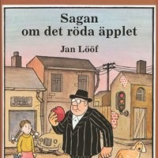

arje år spelas det en mycket viktig fotbollsmatch i Valleby. Laget från Valleby ska möta laget från Solbacka. Silverbucklan glittrar i solskenet och publiken jublar när spelarna springer in på planen. Där kommer skolsyster Mary, som ska spela anfallare tillsammans med Muhammed Karat. Och med Barbro Palm som back och polismästaren i mål kan väl ingenting gå fel?
Det var många år sedan Sagan om det röda äpplet fanns ute till försäljning i stort härligt bilderboksformat. Men den här utgåvan har samma storlek som originalutgåvan. Jan Lööf har dessutom kunnat restaurera bilderna genom att använda ny digital teknik.
Mona längtar efter frihet, revolution och att slippa alla hyenor i småstaden som inte fattar att hon är en alfakrigarinna. Både de i moskén och skolan är hatare, till och med Mila har blivit en feg slavinna. Men bara oupplysta kan kalla Monas graffiti för klotter - det är konst som visar sanningen.

Efter ett uppslitande gräl inser Alex att han bär på en vrede, ett odefinierbart mörker. Besatt av att ta reda på dess ursprung följer han ledtrådar som tar honom tillbaka till sommaren 1932 och vintern 1988, och de ödesdigra händelser som kom att förändra allt.

Under femtio år har Jan Lööf varit en av våra mest älskade barnboksförfattare och tecknare. Han har inspirerat en hel generation serieskapare och skapat några av de mest uppskattade barnprogrammen i svensk TV-historia. Här berättar han för journalisten och författaren Ika Johannesson om sitt arbete och sitt liv, om sina inspirationskällor, hur han har kommit på historierna, skapat bilderna och mycket annat.
Lorna bor på den lilla skotska ön Mure. En fridfull plats, där alla hjälper sina grannar. Men när den lokala läkaren ska gå i pension, finns ingen som vill ta hans plats. Mure är för litet och ligger alldeles för avsides.